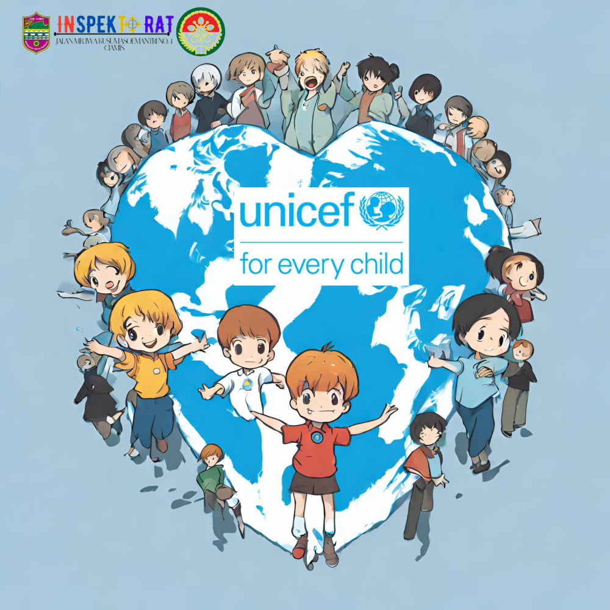
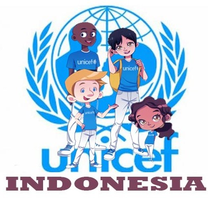
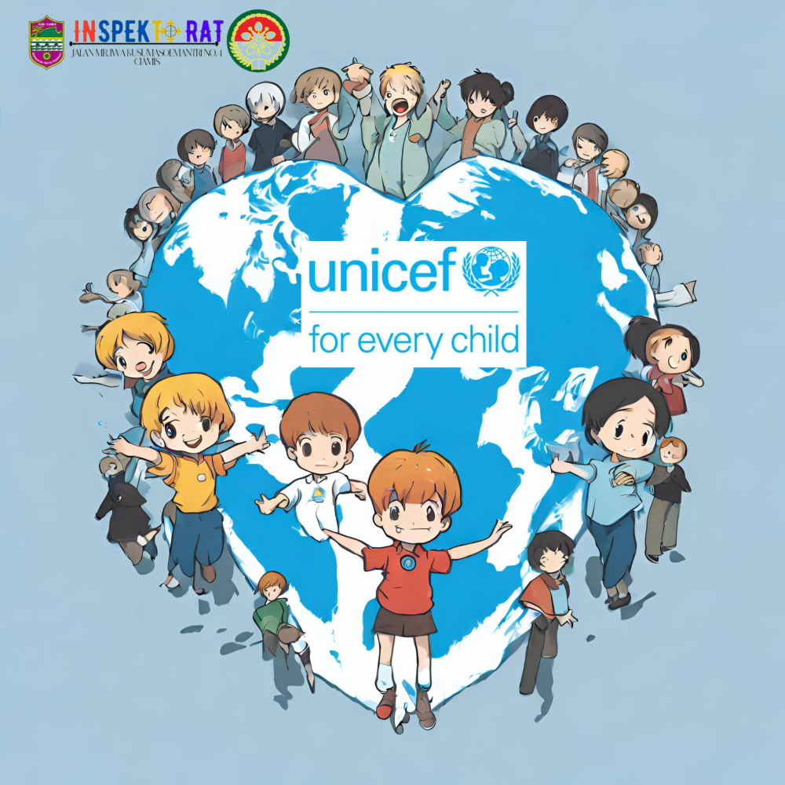
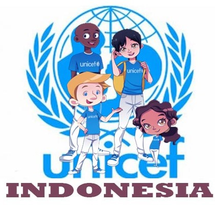

UNICEF (United Nations Children's Fund) adalah organisasi internasional yang bekerja untuk memastikan hak-hak anak terlindungi dan dipenuhi di seluruh dunia. UNICEF dibentuk pada 11 Desember 1946 untuk membantu anak-anak di wilayah Eropa, Tiongkok, dan Timur Tengah yang porak poranda akibat perang. Di Indonesia, UNICEF mendukung upaya pemerintah untuk meningkatkan kesejahteraan anak-anak melalui program yang berfokus pada kesehatan, pendidikan, perlindungan anak, dan pemberdayaan keluarga. UNICEF bekerja dengan berbagai pemangku kepentingan, termasuk pemerintah, masyarakat, dan sektor swasta, untuk memastikan setiap anak memiliki kesempatan yang sama untuk tumbuh dan berkembang. Salah satu misi utama UNICEF adalah mengurangi kemiskinan, memperbaiki akses pendidikan, serta mengatasi masalah kesehatan yang dapat mempengaruhi masa depan anak-anak.
Sebagai lembaga yang bertugas untuk mengadvokasi hak-hak anak, UNICEF juga bekerja untuk memastikan pendidikan yang berkualitas dapat diakses oleh semua anak, terutama mereka yang berada dalam situasi yang paling rentan, seperti anak-anak di daerah terpencil atau yang hidup dalam kondisi konflik. UNICEF mendorong sistem pendidikan yang inklusif dan berkelanjutan dengan menyediakan program-program yang mendukung anak-anak dan guru dalam mengembangkan potensi mereka. Melalui kerjasama dengan pemerintah dan berbagai mitra lokal, UNICEF turut membantu menciptakan kebijakan pendidikan yang lebih baik dan lebih responsif terhadap kebutuhan anak-anak di Indonesia.
Kerjasama UNICEF dengan berbagai pihak di Indonesia mendukung pencapaian Tujuan Pembangunan Berkelanjutan (SDGs) ke-4, yang berfokus pada pendidikan berkualitas. Dengan upaya meningkatkan akses dan kualitas pendidikan, terutama untuk anak-anak yang berada dalam kondisi sulit, UNICEF berkontribusi dalam memastikan pendidikan yang inklusif, adil, dan berkualitas untuk semua anak. Program-program yang dijalankan oleh UNICEF di Indonesia, seperti peningkatan kapasitas guru, fasilitas pendidikan yang lebih baik, dan penguatan sistem pendidikan yang dapat menjangkau semua anak, mendukung upaya global untuk mencapai SDGs ke-4.